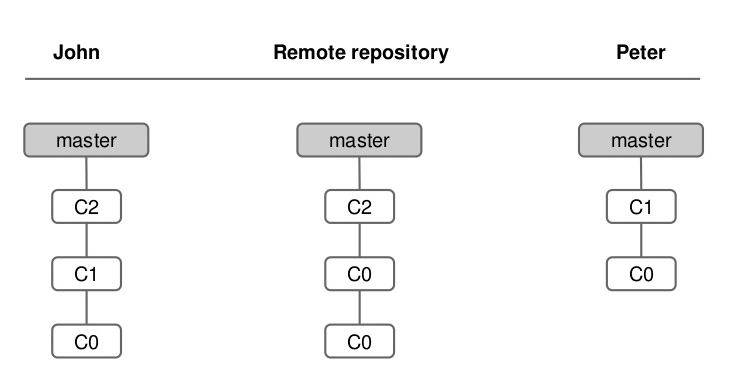

“An application that allows you to record changes to your codebase in a structured and controlled fashion.”
Centralized Development
Distributed Development
A New Git is Initialized as a Remote Repository
John and Peter clone the git repository
John does a commit
John does a push
Peter does a pull
John does a commit & push
Peter does a commit
Peter does a pull (fetch & merge)
Peter does a push
John does a pull
Getting and Creating Projects
init :
To create a git repository from an existing directory of files.$ git init
Clone :
If you want to get a copy of a project, you need to clone it.$ git clone [url]
Basic Snapshotting
git add :
You have to add file contents to your staging area before you can commit them.$ git add index.php
git status :
View the status of your files in the working directory and staging area.$ git status
Basic Snapshotting
git diff :
Shows diff of what is staged and what is modified but unstaged.$ git diff
git commit :
Records a snapshot of the staging area.$ git commit -m “My comment”
Basic Snapshotting
git reset :
Undo changed and commits.$ git reset
git rm :
Remove files from the staging area.$ git rm index.php
Basic Snapshotting
git mv :
Git doesn’t track file renames.$ git mv index.php index.html
git stash :
Save changes made in the current index and working directory for later.$ git stash
Branching and Merging
git branch :
Switch to a new branch context $ git branch git branch QA
git checkout :
Save changes made in the current index and working directory for later.$ git checkout QA
git checkout -b live
Branching and Merging
git merge :
Merge a branch context into your current one.$ git merge QA
git log :
Show commit history of a branch.$ git log
Branching and Merging
git tag :
Tag a point in history as important.$ git tag -a v1.0
Sharing and Updating Projects
git fetch :
Download new branches and data from remote repository.$ git fetch
git pull :
Fetch from a remote repo and try to merge into the current branch.$ git pull
Sharing and Updating Projects
git push :
Push your new branches and data to a remote repository.$ git push